Antiprotons and Elementary Particles over a Solar Cycle: Results from the Alpha Magnetic Spectrometer
Phys. Rev. Lett. 134, 051002
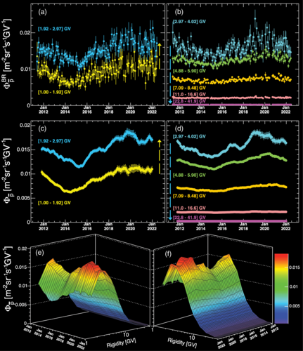 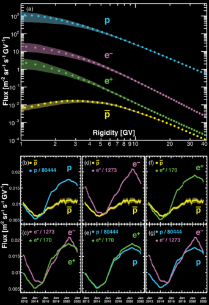 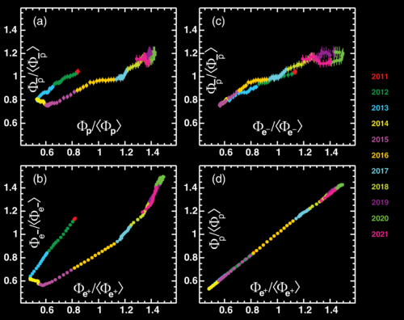 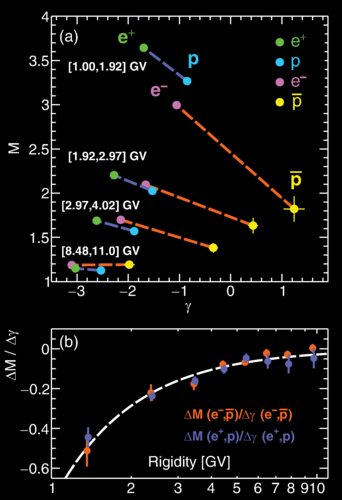
Solar Modulation of Cosmic Nuclei over a Solar Cycle: Results from the Alpha Magnetic Spectrometer
Phys. Rev. Lett. 134, 051001
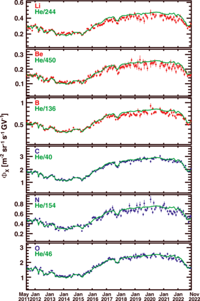 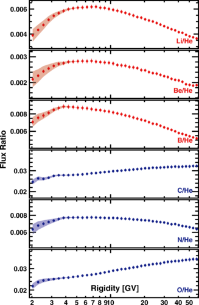 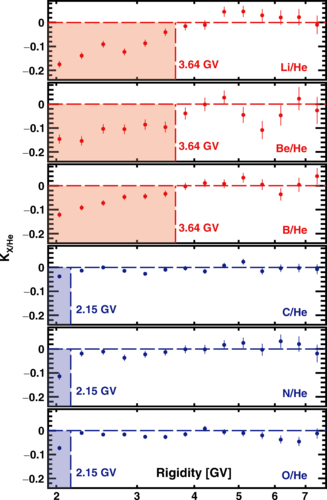 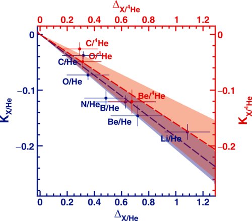
Properties of Cosmic Deuterons Measured by the Alpha Magnetic Spectrometer
Phys. Rev. Lett. 132, 261001
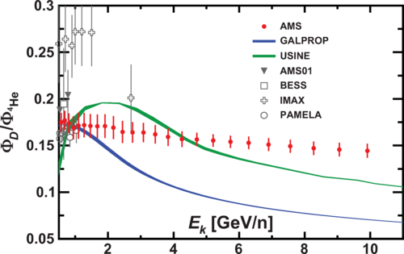 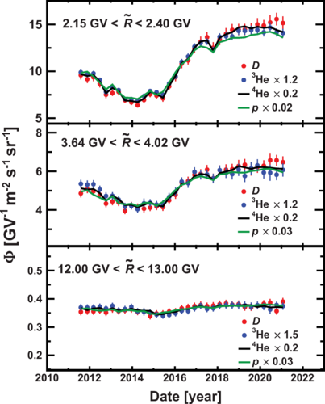 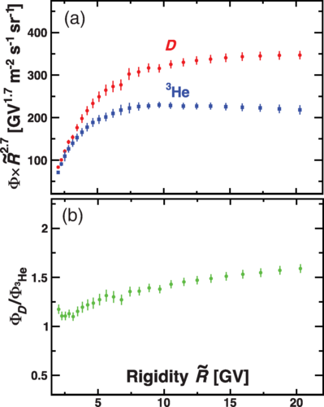 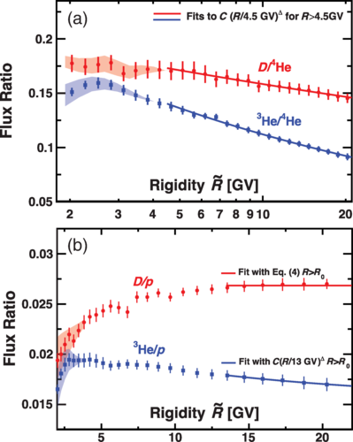 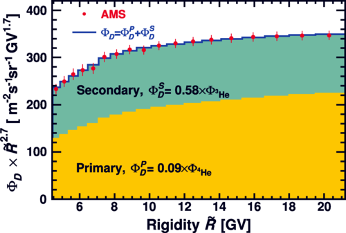
GLADEnet: A progressive web app for multi-messenger cosmology and electromagnetic follow-ups of gravitational-wave sources
A&A, 684, A44 (2024)
Modernization of Coloti otical observatory: remote control and automation for multimessanger follow-up
AstroRob 2023
Temporal Structures in Positron Spectra and Charge-Sign Effects in Galactic Cosmic Rays
Phys. Rev. Lett. 131, 151002
The Stereo Event Builder software system of the ASTRIMini-Array
Proceeding ICRC: PoS(ICRC2023) 597
Properties of Cosmic-Ray Sulfur and Determination of the Composition of Primary Cosmic-Ray Carbon, Neon, Magnesium, and Sulfur: Ten-Year Results from the Alpha Magnetic Spectrometer
Phys. Rev. Lett. 130, 211002
Temporal Structures in Electron Spectra and Charge Sign Effects in Galactic Cosmic Rays
Phys. Rev. Lett. 130, 161001
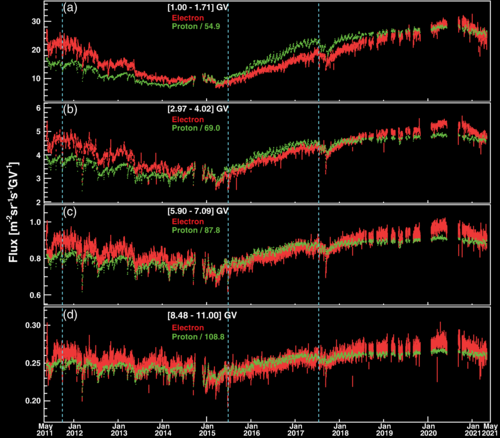 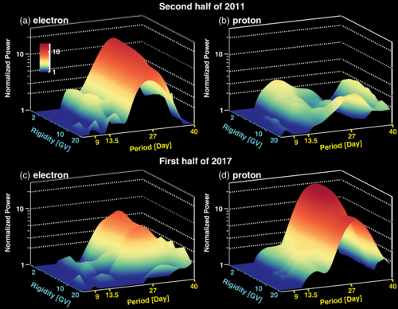 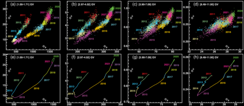 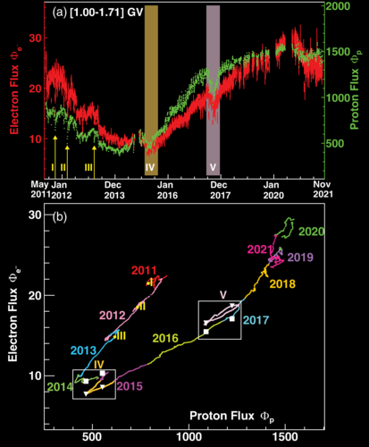
Properties of Cosmic Deuterons Measured by the Alpha Magnetic Spectrometer
Phys. Rev. Lett. 132, 261001
Modernization of Coloti otical observatory: remote control and automation for multimessanger follow-up
AstroRob 2023
Temporal Structures in Positron Spectra and Charge-Sign Effects in Galactic Cosmic Rays
Phys. Rev. Lett. 131, 151002
The Stereo Event Builder software system of the ASTRIMini-Array
Proceeding ICRC: PoS(ICRC2023) 597
Properties of Cosmic-Ray Sulfur and Determination of the Composition of Primary Cosmic-Ray Carbon, Neon, Magnesium, and Sulfur: Ten-Year Results from the Alpha Magnetic Spectrometer
Phys. Rev. Lett. 130, 211002
Temporal Structures in Electron Spectra and Charge Sign Effects in Galactic Cosmic Rays
Phys. Rev. Lett. 130, 161001